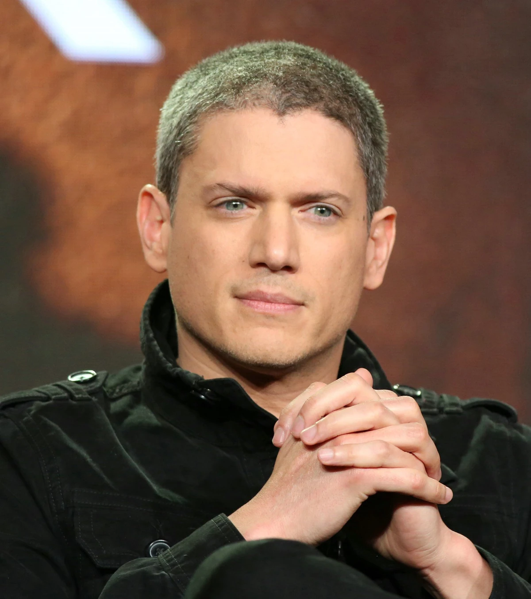
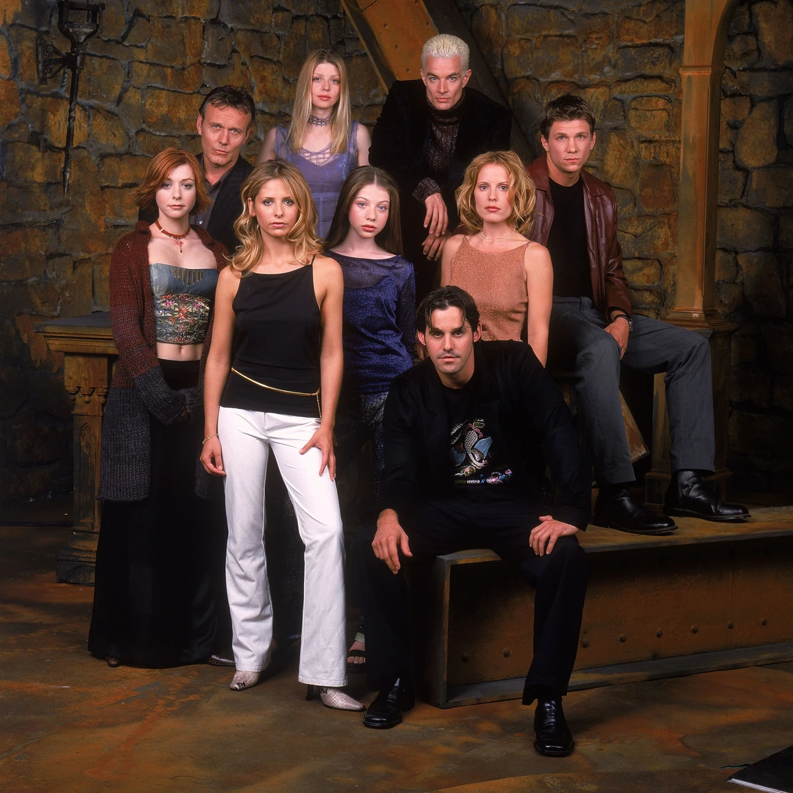
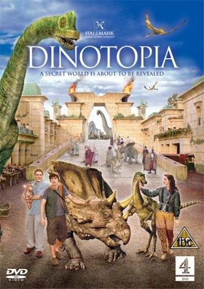
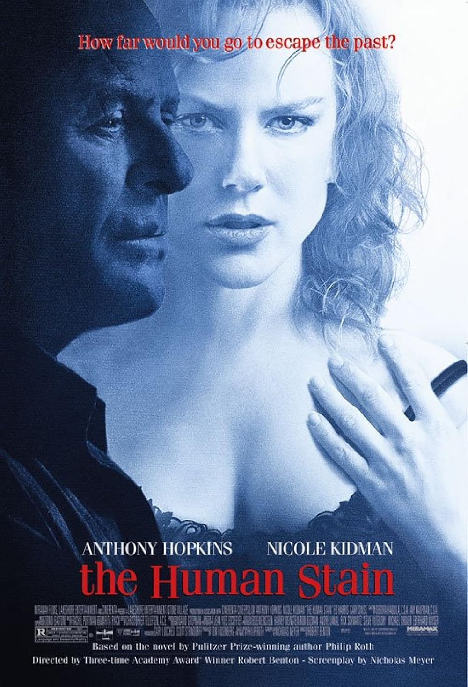
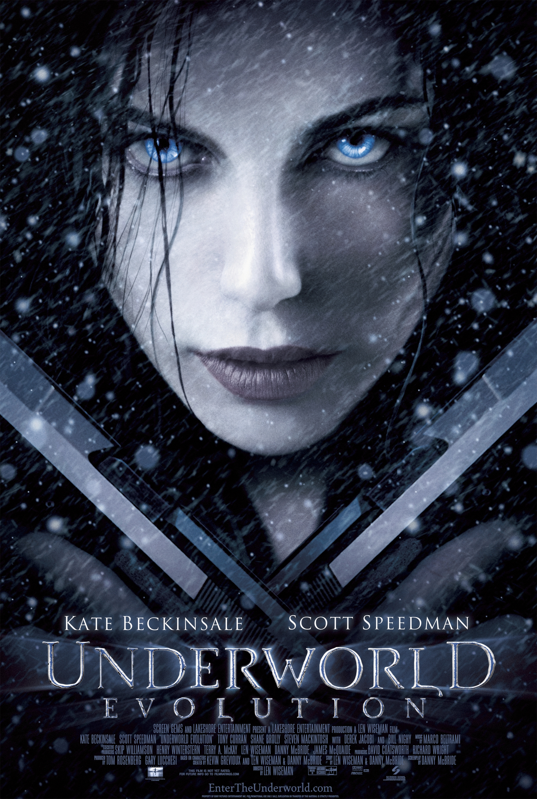
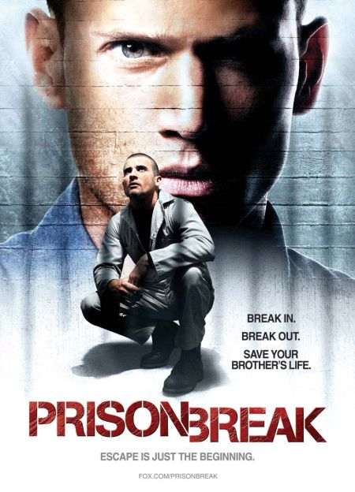
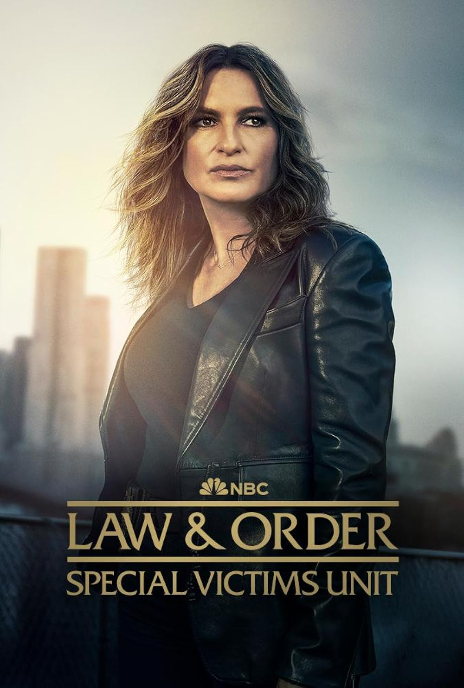
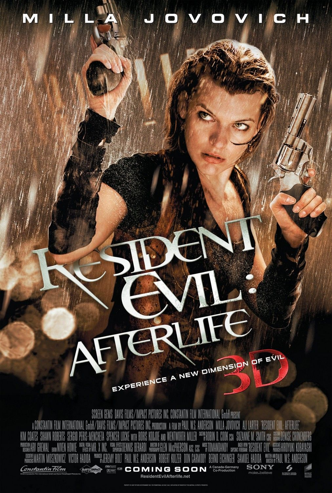
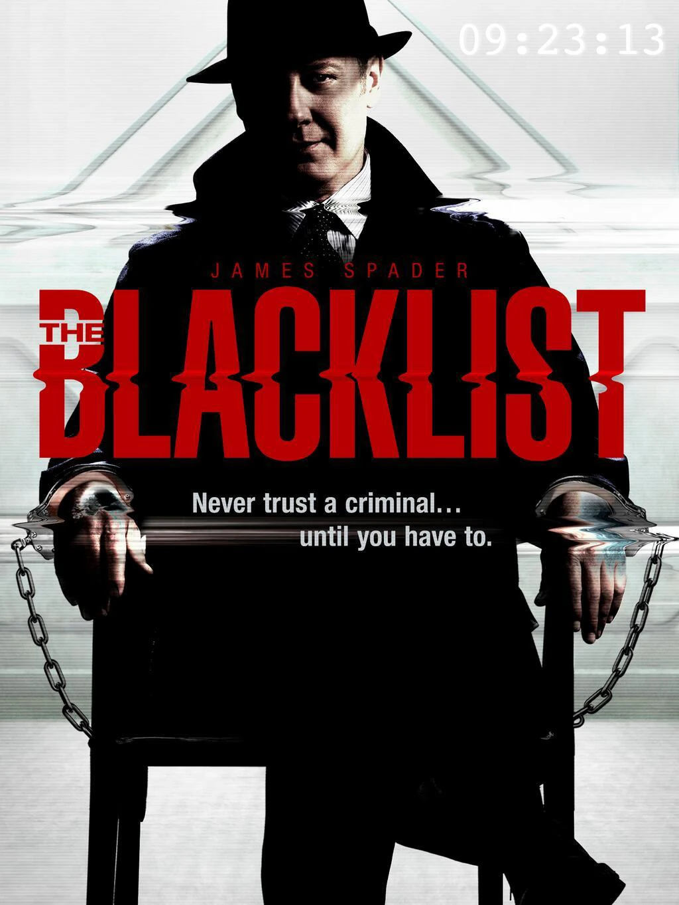

Miller was born in Chipping Norton, Oxfordshire, England, to American parents.[2] His mother, Roxann (née Palm), is a special education teacher, and his father, Wentworth E. Miller II, is a lawyer and teacher, who was studying at the University of Oxford on a Rhodes Scholarship at the time of Miller's birth.[1][3][4] Miller said in 2003 that his father is black and his mother is white.[5] His father is of African-American, Jamaican, German, and English ancestry; his mother is of Rusyn,[6] Swedish, French, Dutch, Syrian, and Lebanese ancestry.[7][8] He has two sisters, Leigh and Gillian. Miller's family moved to Park Slope, Brooklyn, when he was a year old.[4][9] He attended Midwood High School in Brooklyn, and graduated from Princeton University in 1995 with a BA in English after completing a 116-page long senior thesis, titled "Doubling and the Identity Construct in Charlotte Perkins Gilman's 'The Yellow Wallpaper,' Jean Rhys's Wide Sargasso Sea, and Charlotte Bronte's Jane Eyre", under the supervision of Gina Dent.[10][11] While at Princeton, he performed with the a cappella group the Princeton Tigertones and was a member of the Quadrangle Club and the Colonial Club.[12]
In 1995, Miller relocated to Los Angeles to pursue an acting career.[13] He has stated that his rocky road to stardom "was a long time in the coming and there were a lot of upsets and a lot of failures and roadblocks, but I couldn't walk away from it. I needed it like I needed air, it was just something I had to do."[14] Miller's first TV appearance was as student-turned-sea monster Gage Petronzi on Buffy the Vampire Slayer ("Go Fish", 1998).

Miller's first starring role was in 2002 as the sensitive, introverted David Scott in ABC's mini-series Dinotopia. After appearing in a few minor television roles, he moved on to co-star in the 2003 film The Human Stain, playing the younger version of the Anthony Hopkins character, Coleman Silk. He identified strongly with the core dilemma of the movie, about a black man who chooses to "pass" as white. Miller worked extensively on the role, not only in researching Anthony Hopkins, but by embarking on a four-month regimen to accurately portray Silk as a boxer. Also in 2003, he had a minor role in the film Underworld, playing a doctor and friend of the character Michael Corvin.



In 2005, Miller was cast as Michael Scofield in Fox Network's television drama Prison Break. He played the role of a gifted structural engineer who created an elaborate scheme to help his brother, Lincoln Burrows (Dominic Purcell), escape death row after being found guilty of a crime he did not commit. His character had a full upper body (front and back) tattoo. Covering both the front of Miller's torso and his back, along with both arms from shoulders to wrists, the special effects for the tattoo took over four hours to apply. His performance in the show earned him a 2005 Golden Globe Award nomination for Best Actor in a Dramatic Series.[15] The show was finished in 2009 after four seasons, but a new nine-episode fifth season was released April 4, 2017, with Miller reprising his role. Miller appeared in two Mariah Carey music videos, "It's Like That" as a party guest and "We Belong Together" as her love interest. Director Brett Ratner, who directed the pilot episode of Prison Break, was also signed on to direct the two Carey videos. Ratner decided to use Miller in the videos as well.[16]

In addition, Miller guest-starred in the Season 11 premiere of Law & Order: Special Victims Unit as Detective Nate Kendall, a detective from Precinct 24 of the New York City Police Department.[17][18] He also featured in Resident Evil: Afterlife, the fourth film in the commercially successful Resident Evil film series based on the video game series of the same name; Miller plays Chris Redfield, one of the protagonists of the video game series.


Miller wrote the screenplay for the film Stoker, as well as a prequel to Stoker, Uncle Charlie.[19] He used the pseudonym Ted Foulke, later explaining, "I just wanted the scripts to sink or swim on their own."[20] Miller's script was voted to the 2010 "Black List" of the 10 best unproduced screenplays then making the rounds in Hollywood.[21] The film is about a teenage girl who must deal with a mysterious uncle following the death of her father. Miller described it as a "horror film, a family drama and a psychological thriller".[22] Although influenced by Bram Stoker's Dracula, Miller has clarified that Stoker is not a vampire story.[22][23] Hitchcock's Shadow of a Doubt also influenced the film but only as a jumping-off point, from which the story takes a different direction.[22] Park Chan-wook directed, with stars Mia Wasikowska as the teenager, Nicole Kidman as the mother, and Matthew Goode as the uncle.[24] The film was released in 2013, and received generally positive reviews from critics.[25]
